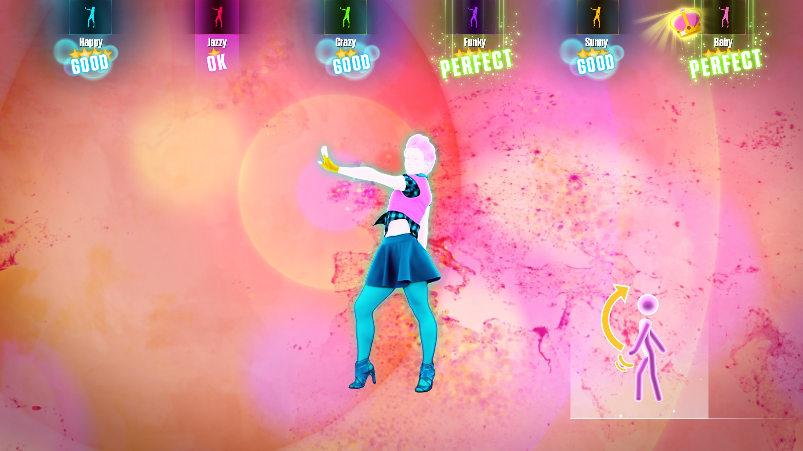

Overview
Just Dance 2020 is the latest version of Just Dance, which is a video game developed by Ubisoft, a French video game publisher. The objective of all the games in this series is to beat your opponents in a dance-off, or just to have fun and exercise by means of dancing. You follow along with the dancer on the screen with a monitor in your hand that senses your movements. Usually the game has a wide variety of the most popular songs of the year, so you can dance to your favourite song. There are even workout dance routines that have a theme, like karate, hip, or punk. It was unveiled on June 10, 2019, and released on November 5, 2019. It is availible for Nintendo Switch, Wii, PlayStation4, Xbox One and Stadia.
